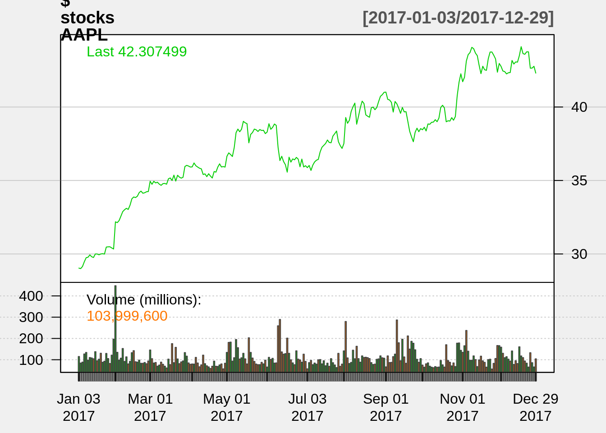
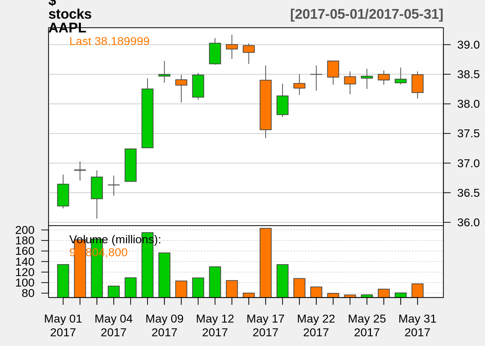

52 Low-key ML packages in R
52.1 Vedant Kumar and Siddhant Kumar
52.1.1 Nuralnet Package in R
# creating training data set
weight=c(120,80,55,100,75,60)
height=c(150,165,155,175,145,170)
obese=c(1,0,0,1,1,0)
df=data.frame(weight,height,obese)
# fit neural network
nn=neuralnet(obese~weight + height,data=df, hidden=3,act.fct = "logistic",
linear.output = FALSE)
# - obese~weight + height, Placed is label(dependent variable) and
#weight and height are features (independent variable).
# - df is dataframe,
# - hidden = 3: represents single layer with 3 neurons.
# - act.fct = "logistic" is the activation function
# plot neural network
plot(nn)
#prepare a test data
weight=c(130,90)
height=c(130,185)
df_test=data.frame(weight,height)
## Prediction using neural network
Predict=compute(nn,df_test)
prob = Predict$net.result
pred = ifelse(prob>0.5, 1, 0)
print(pred)## [,1]
## [1,] 1
## [2,] 0#Part 1 - quantmod Package in R
#download the price data for Apple Inc.
getSymbols("AAPL")## [1] "AAPL"
#add parameters to the getSymbols() function and view the data using the head() function.
getSymbols("AAPL",
from = "2016/12/31",
to = "2018/12/31",
periodicity = "daily")## [1] "AAPL"
head(AAPL)## AAPL.Open AAPL.High AAPL.Low AAPL.Close AAPL.Volume AAPL.Adjusted
## 2017-01-03 28.9500 29.0825 28.6900 29.0375 115127600 27.33247
## 2017-01-04 28.9625 29.1275 28.9375 29.0050 84472400 27.30188
## 2017-01-05 28.9800 29.2150 28.9525 29.1525 88774400 27.44072
## 2017-01-06 29.1950 29.5400 29.1175 29.4775 127007600 27.74663
## 2017-01-09 29.4875 29.8575 29.4850 29.7475 134247600 28.00078
## 2017-01-10 29.6925 29.8450 29.5750 29.7775 97848400 28.02902
#Using financial data from multiple organisations using lapply()
stocks <-lapply(c("AAPL", "GOOG"), function(x) {getSymbols(x,
from = "2016/12/31",
to = "2018/12/31",
periodicity = "daily",
auto.assign=FALSE)} )## AAPL.Open AAPL.High AAPL.Low AAPL.Close AAPL.Volume AAPL.Adjusted
## 2017-01-03 28.9500 29.0825 28.6900 29.0375 115127600 27.33247
## 2017-01-04 28.9625 29.1275 28.9375 29.0050 84472400 27.30188
## 2017-01-05 28.9800 29.2150 28.9525 29.1525 88774400 27.44071
## 2017-01-06 29.1950 29.5400 29.1175 29.4775 127007600 27.74664
## 2017-01-09 29.4875 29.8575 29.4850 29.7475 134247600 28.00078
## 2017-01-10 29.6925 29.8450 29.5750 29.7775 97848400 28.02902
chart_Series(AAPL)
chartSeries(stocks$AAPL,
type="line",
subset='2017',
theme=chartTheme('white'))
chartSeries(stocks$AAPL,
type="candlesticks",
subset='2017-05',
theme=chartTheme('white'))
#calculation of some common financial metrics
seriesHi(stocks$AAPL)## AAPL.Open AAPL.High AAPL.Low AAPL.Close AAPL.Volume AAPL.Adjusted
## 2018-10-03 57.5125 58.3675 57.445 58.0175 114619200 56.12625
seriesLo(stocks$AAPL)## AAPL.Open AAPL.High AAPL.Low AAPL.Close AAPL.Volume AAPL.Adjusted
## 2017-01-03 28.95 29.0825 28.69 29.0375 115127600 27.33247